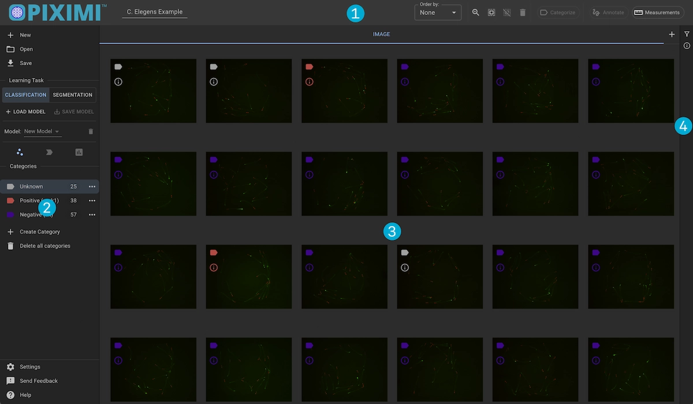
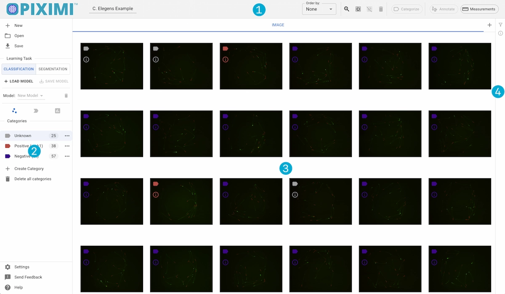
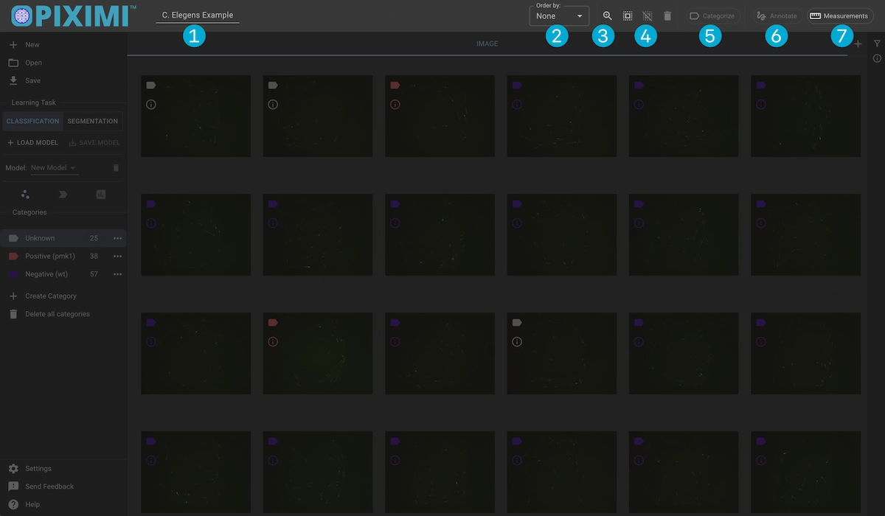
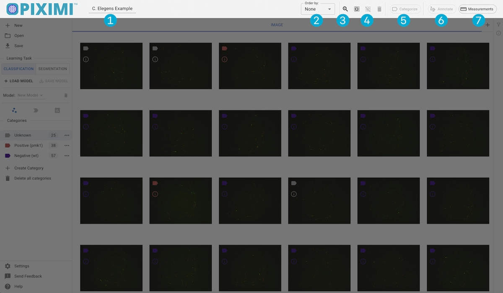
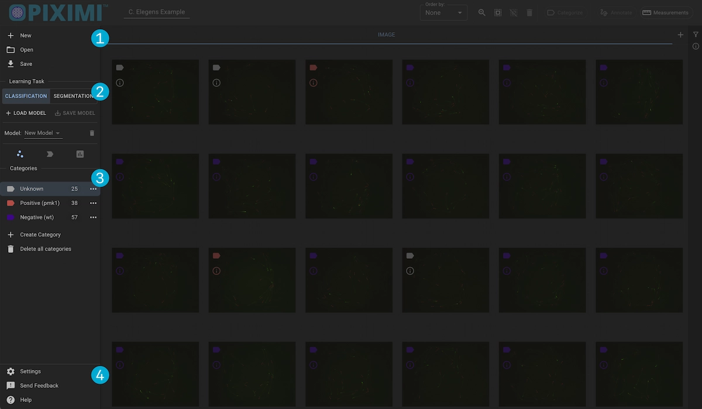
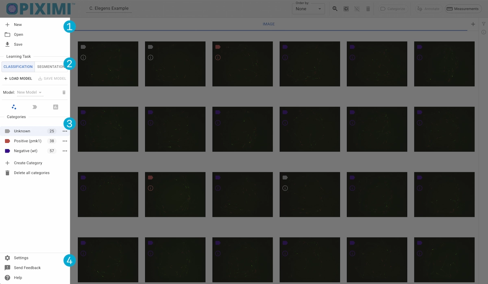
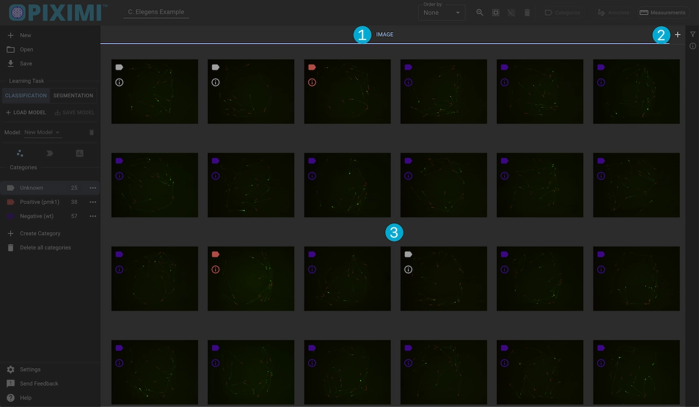
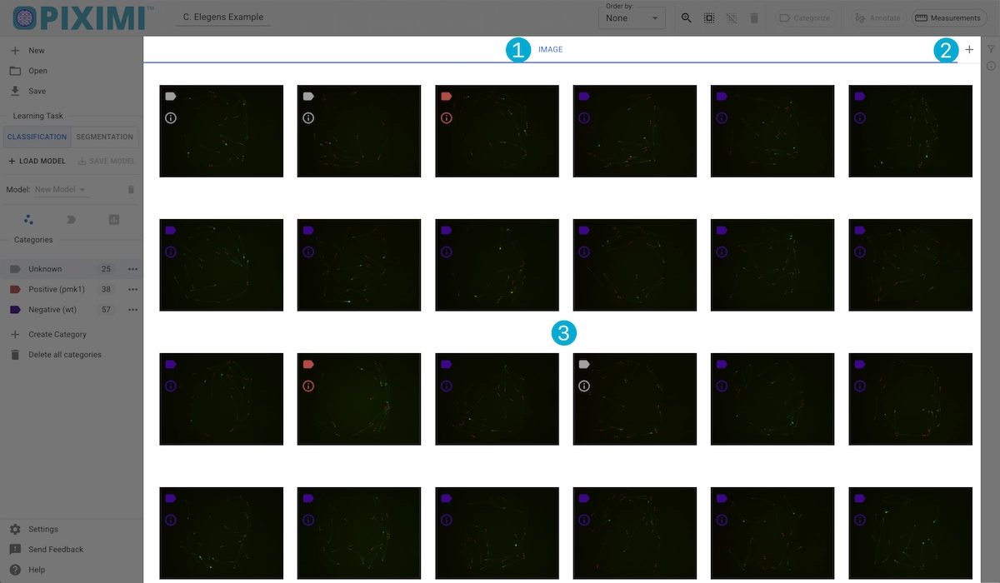
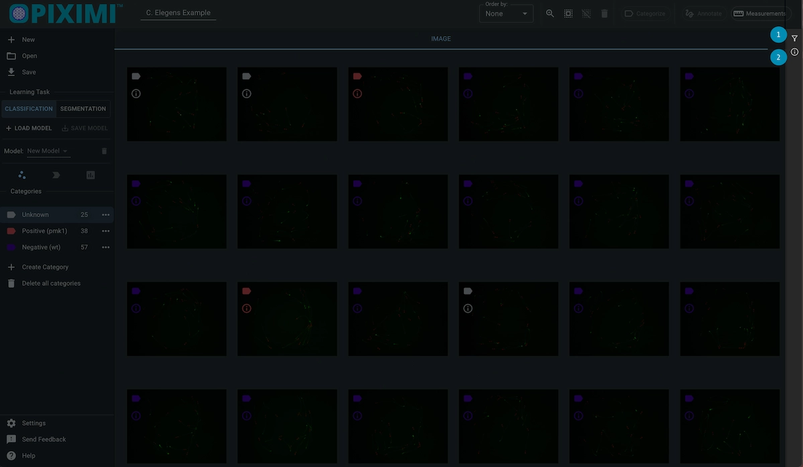
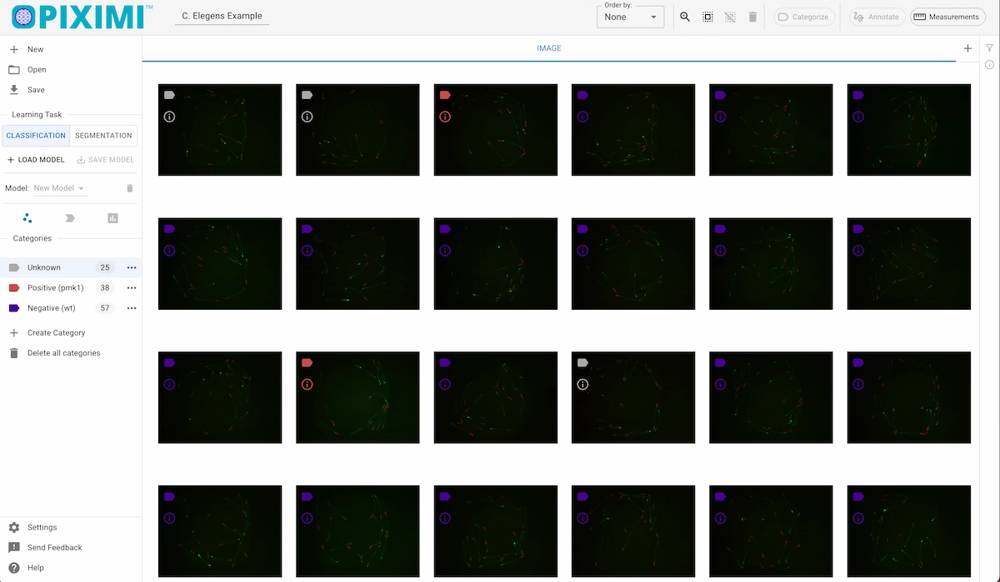

Project Viewer#
The Project Viewer is where you can create New projects, open previous projects and images or example projects, and save your current project.
This view is also where you can categorize your images and perform classification and segmentation tasks.


Top Appbar
Action Drawer
Image/Object Grid
Info Bar
Top Appbar#


1. Project Name#
Update the name of your project. Saved filenames will default to the project name.
2. Sort#
Choose the order in which your images/Objects appear in the image grid. Options are by:
File Name
Category
Random
Image Name (Image name may be be updated by the user. Default is file name)
3. Grid Item Size#
Adjust the size of the images/objects displayed in the grid
4. Select/Deselect/Delete#
Select all images/objects
Deselect all images/objects
Delete selected images/objects
The number of selected images will be shown near the “Select All” button.
Image Deletion
In the case that an image has associated annotations, deleting the image will also delete the annotations.
5. Categorize Images/Objects#
After selecting a subset of images/objects, you can use this dropdown menu to select an available category to apply to the selected images.
Action Drawer#


1. File I/O#
Project Creation
You can start a new project by clicking the New button. You will be prompted to input a new project name, and the current project will be replaced with a blank one.
Open a Project
You can load a previously saved project from either the .zip file or the .zarr file. As with creating a new project, the current project will be replaced.
You can also choose to load one of our example projects. These are:
MNIST – Small subset of the MNIST database of handwritten digits
C. elegans – Images of transgenic C. elegans expressing the promoter of gene clec-60 fused to GFP.
Human U2OS-cells – “This image set is of a Transfluor assay where an orphan GPCR is stably integrated into the b-arrestin GFP expressing U2OS cell line.
Human U2OS-cells Cytoplasm Crops – Images of cytoplasm to nucleus translocation of the Forkhead (FKHR-EGFP) fusion protein in stably transfected human osteosarcoma cells.
Human PLP1 Localization – Human HeLa cells expressing the disease-associated variant of PLP1 protein, which localizes differently than the healthy version.
Malaria Infected Human Blood Smears – Blood cells infected by P. vivax (malaria) and stained with Giemsa reagent.
U2OS Cell-Painting Experiment – U2OS cells treated with an RNAi reagent and stained.
Upload Images
Open a file picker to select images you want to upload, or drag and drop them into the image grid. Piximi supports a variety of file types:
PNG
JPEG
TIFF
DICOM
BMP
Image Channels
Currently, Piximi requires all images in a project to contain the same number of channels. In the case of 3D .tiff images, Piximi will load the file under the assumption that the number of channels equals that of the images in the project and will calculate the number of planes based off of that assumption.
Save Project
Save your current project. Piximi saves the project as a compressed .zip file containing a .zarr file with the project data (images, objects, categories, measurements) as well as any trained classifiers used in the project.
2. Learning Task#
This section contains the deep learning functionality of piximi (Classification and Segmentation). From this section, users can upload and train classification models, select pretrained segmentation models, perform inference on the images and objects in the project, evaluate the performance of the classifiaction models, and save trained models.
More information about classificatin and segmentation can be viewed in their respective chapters.
3. Categories#
This section contains the per-Kind categories in the project. You can create, edit, and delete categories here.
When creating a new category, the category names must be unique within each kind, and you can select a category color from a pre-populated list.
Each kind will contain an “Unknown” category which loaded images will default to.
Deleting a category will recategorize the associated images as “Unknown”.
In addition to the “Categorize” button in the Top App Bar users can recategorize selected images by holding down the shift key, entering the index of the desired category (0, 1, 2, etc.) then releasing the shift key.
4. App Controls#
This sections contains the app settings, functionality to report issues within the app to the GitHub project repo, and activation of the in-app help context.
App Settings
Light/Dark Mode
Image selection border width/color
Sound Effects
Show image info when scrolling
Help Context
When activated, sections of the app which are associted with help informatino will be highlighted. Hovering over these sections will update the help dialog in the lower left of the screen with the relavent information. Hold down the shift key and click a section to lock the information dialog to that section.
Image/Object Grid#


1. Kind Tabs#
Piximi groups the project data into what we cal “Kinds”. Kinds are essentially a supercategory. Each project will have an “Image” kind which refers to whole images and cannot be deleted or edited.
Additional kinds can be created, edited and deleted, and each kind has it own set of associated categories.
For example, a project will contain a set of whole images (belonging to the “Image” kind). An image then may contain objects, such as “Nuclei” and “Cell Membrane” objects. In this example the project has three kinds – “Image”, “Nuclei”, and “Cell Membrane”. The object can then be grouped by category, for example the objects of kind “Nuclei” can be categorized as “Healthy” or “Infected”.
A simple structure could look like this:
kinds:{
Image:{
data:[...]
categories:[...]
},
Nuclei:{
data:[...],
categories:[Healthy, Infected, ...],
},
...
}
Each Kind tab contains functionality for editing the kind name, minimizing the kind (removing the kind from the visible tabs) and deleting the kind.
Deleting Kinds
Deleting a Kind will also delete all associated objects or images.
2. Create/Show Kinds#
Use the “+” button to create new kinds. Additionally, any kind that was previously hidden can be restored from the dropdown menu that appears upon clicking the button.
3. Images/Objects#
The main image grid displays all of the images or objects in a project. You can click on an image to select it, as well as view its category and some brief info.
Info Bar#


Filter by category/training partition
View image/object details